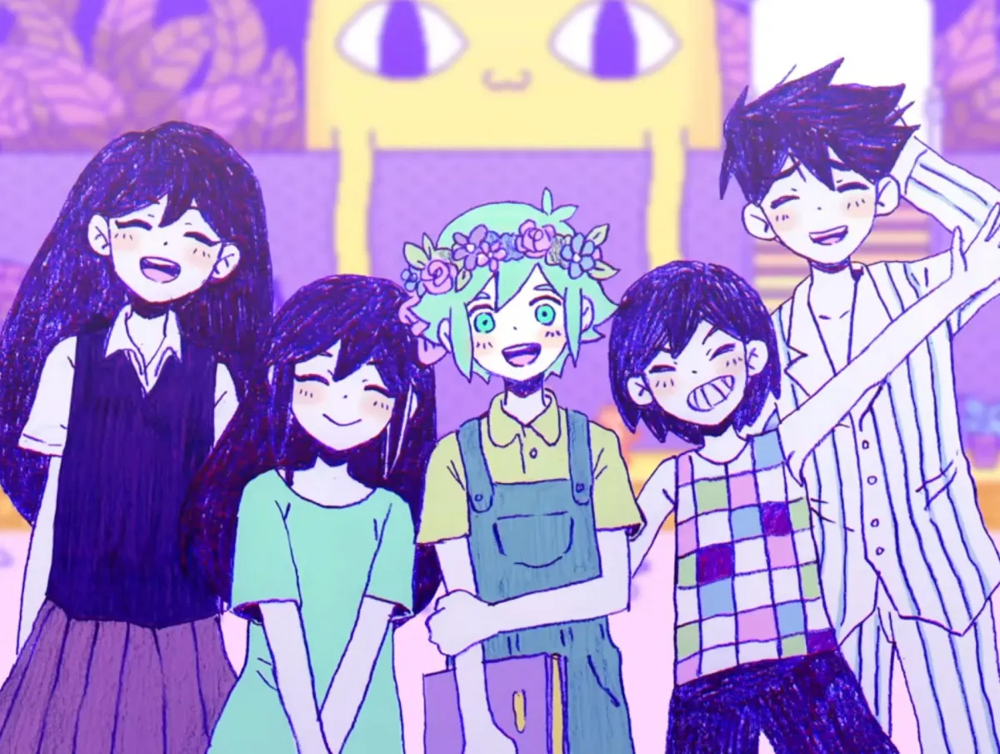

Art
A visual embodiment of its theme of grief and healing, the visuals in OMORI oscillates between a childlike, colorful artstyle and a grounded, occasionally horrifying one. This contrast vividly captures the essence of the emotional struggle of experiencing loss during one's adolescence, another one of the game's major themes. Another potential interpretation I can personally draw from this contrast is how human lives (originally happy, good, innocent) are affected by the knowledge or fear of mortality, terrifying but nonetheless unavoidable. This artistic style is not limited to the backgrounds and setpieces, but further extends to character design. The characters in OMORI are cute, memorable, and lovable, yet another stark contrast to the realistic struggles they may suffer through despite their cartoonish and simple appearance.Story
At its core, the story of OMORI is an exploration of the experience, coping of, and eventual acceptance of loss. You play as a young, introverted shut-in who grew up happy with a group of friends that became fragmented when one of them unexpectedly passes away. Throughout the game, the protagonist is presented with the choice of continuing a life of deceit, stuck trapped in the past, or fighting to move on and face the truth of reality. Choosing the former means spending more time in HEADSPACE, the fictional dream world within the mind of the protagonist where he is able to relive the wholesome life he once had. The latter choice offers the opportunity to confront the once-happy group of friends and help them move on from their pain. I feel that anyone living in the shadow of unresolved pain may see their struggles reflected in the protagonist's journey, and once offered me insight into the importance of confronting painful truths and the power of acceptance.